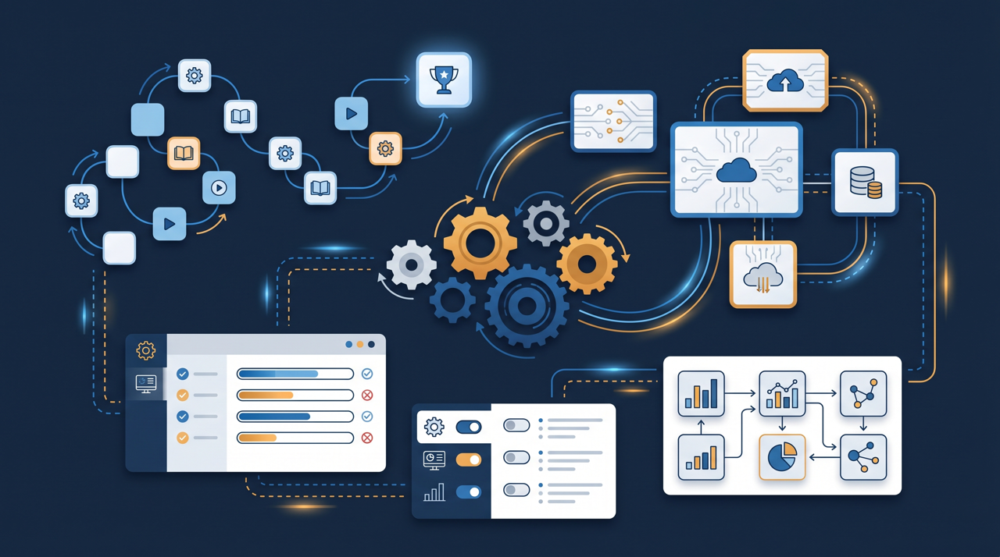
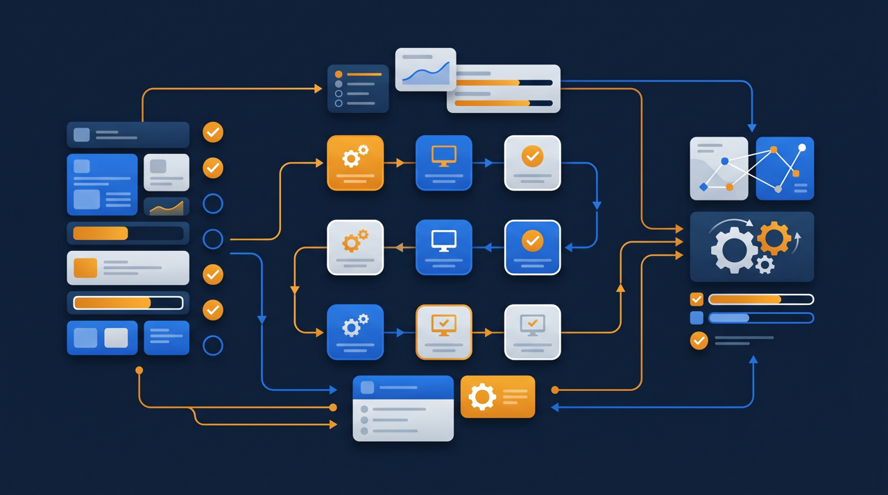
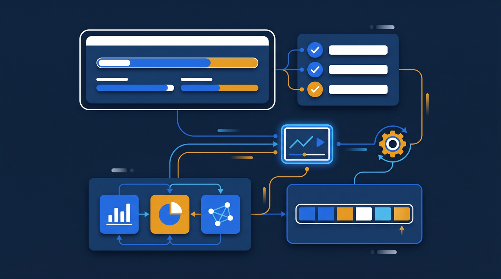

「営業に必要な研修と、製造に必要な研修は、まったく別なんですよね」——部門や拠点を抱える会社では、全員に同じ研修を配るやり方が、だんだん合わなくなってきます。かといって部門ごとにバラバラに管理すると、今度は手間が増える。この記事では、部門別・拠点別の研修管理とは何かを整理しつつ、受講対象や教材を分けながら、管理の手間を増やさずに運用する方法をお話しします。

部門別・拠点別の研修管理とは？なぜ「分ける」必要があるのか
部門別・拠点別の研修管理とは、部門や拠点ごとに必要な研修が異なる場合に、受講対象や教材を分けて配信・管理することです。全員に同じものをまとめて配るのではなく、その人の所属や役割に応じて、受けるべき研修だけが届くように整理する、という考え方になります。
なぜ分ける必要があるのか。理由はシンプルで、必要な研修が部門ごとに違うからです。営業部には商談や提案の研修が要りますが、製造部にとっては優先度が低い。逆に、製造部に必要な機械の操作や安全の研修は、営業部には関係が薄い。これを全員にまとめて配ると、自分に関係のない研修まで受けることになり、受講者は「なぜこれを受けるのか」と感じてしまいます。
会社が小さいうちは、全員が同じ仕事に近いので、まとめて配っても問題は出にくいものです。ところが、部門が分かれ、拠点が増え、役割が多様になってくると、同じものをまとめて配るやり方では過不足が生まれます。必要な人に届かず、不要な人に届く。この状態を解消するのが、部門別・拠点別の研修管理だと言えます。厚生労働省の能力開発基本調査でも、教育訓練の実施状況は職種によって差があることが示されており、職種や部門に応じた育成が現実的な姿だと分かります。
「分けないと起きること」を具体例で考える
分ける意味を実感するには、分けないとどうなるかを見てみるのが早いですよね。いくつか、現場で起きやすい場面を挙げてみます。
ある複数事業を持つ会社では、研修をすべて全社一斉で配信していました。すると、製造部の社員から「うちには関係ない営業研修ばかり案内が来る」という声が上がり、逆に営業部からは「現場の安全研修まで受けさせられて時間が取られる」と不満が出ました。全員に配ること自体は公平に見えますが、受け手にとっては、自分に関係のない研修に時間を使わされている状態だったわけです。
拠点のばらつきも、分けていないことで起きやすい問題です。店舗や拠点ごとに、それぞれの責任者が自分のやり方で教えていると、同じ会社なのに教わる内容や水準が拠点によって変わってしまいます。A店で教わったことがB店では教わっていない、という事態が起こる。これは、研修コンテンツが共通化されておらず、拠点任せになっていることが背景にあります。
- 自分に関係のない研修の案内が届き、受講者が意味を感じにくい
- 必要な研修が、対象者に確実に届いているか分からない
- 拠点ごとに教える人が違い、内容や水準にばらつきが出る
- どの部門が何を受けたか、全体の状況をつかみにくい
- 部門固有の研修と全社共通の研修が混在し、整理がつかない
こうした場面に心当たりがあるなら、研修を分けて管理する時期に来ている、というサインかもしれません。
「共通」と「固有」を分けて設計する
分けるといっても、すべての研修を部門ごとにバラバラにするわけではありません。ここで大事なのが、全社共通の研修と、部門・拠点に固有の研修を分けて考えることです。
全社共通にあたるのは、コンプライアンス、情報セキュリティ、安全衛生、ハラスメント防止といった、所属に関わらず全員が受けるべき研修です。これらは全員にまとめて配って問題ありません。一方、部門・拠点に固有なのは、その部門の専門業務や、その拠点ならではの手順に関する研修です。営業の提案手法、製造の機械操作、店舗ごとの接客ルールなどがこれにあたります。
この二層に整理すると、配信の設計がすっきりします。全員には共通研修を配り、それに加えて、所属に応じた固有研修を上乗せする。受講者から見れば、「全員が受けるもの」と「自分の部門だから受けるもの」が分かれているので、なぜこれを受けるのかが納得しやすくなります。同じものをまとめて配るのでも、部門別だけでもなく、共通と固有を組み合わせるという発想ですね。

受講対象の振り分けを自動化する
「分けると管理が複雑になりそう」——これが、部門別管理をためらう一番の理由かもしれません。確かに、部門ごとに名簿を作り、教材を分け、それぞれに案内を出すのを手作業でやると、煩雑になります。ところが、ここは仕組みで解決できる部分なんです。
学習管理システム（LMS）には、所属や役割に応じて受講対象を自動で振り分けられるものがあります。たとえば「営業部に所属する人には営業研修を自動で割り当てる」「製造部の人には安全研修を割り当てる」といった設定です。一度ルールを決めておけば、新しく営業部に配属された人には、自動で営業研修が届く。担当者が、誰にどの研修を割り当てるかを毎回手で考える必要がなくなるわけです。
ところで、この振り分けがあると、異動への対応も楽になります。人が部署を移ったら、所属の情報を更新するだけで、受けるべき研修も自動的に切り替わる。営業から製造へ移った人には、製造の研修が届くようになる。手作業だと、異動のたびに名簿を作り直す必要がありますが、ルールで動いていれば、その手間が省けます。分けることと、管理が複雑になることは、必ずしも同じではないんですよね。
管理権限を分ける——本部と現場の見える範囲を整理する
部門別・拠点別の管理を進めると、もう一つ整理したくなるのが、誰がどこまで見られるかという権限の話です。これも分けて設計しておくと、運用がスムーズになります。
全社の研修状況は本部が把握したい一方で、各部門や各拠点の責任者は、自分の担当範囲の状況を見たいはずです。ところが、すべての管理者が全社の情報を見られると、情報が多すぎて自分に必要な部分が埋もれてしまいます。逆に、本部しか状況を見られないと、現場の責任者が自部門の受講を後押ししたくても手が出せません。
LMSには、管理者ごとに見える範囲を分けられるものがあります。本部の管理者は全社を見渡し、各部門の管理者は自部門の受講状況だけを把握する、という運用です。こうすると、各拠点の責任者が自分の拠点の未受講者に声をかけられるようになり、現場主導で受講を進められます。本部が全拠点を一手に催促するより、現場が自分の範囲を見て動くほうが、受講は進みやすい傾向があります。J-Net21などの中小企業向け情報でも、多店舗・多拠点の経営における情報共有や管理の工夫は繰り返し取り上げられていますが、権限の整理はその基盤になる部分です。
権限を分けることには、現場の当事者意識を高める効果もあります。自分の拠点の受講状況が自分の画面で見えると、責任者は「うちの拠点をきちんと進めよう」という気持ちになりやすい。逆に、すべてを本部が管理して現場には何も見えない状態だと、受講は「本部から言われてやるもの」になり、現場は受け身になりがちです。見える範囲を現場にも持たせることで、研修を自分ごととして捉えてもらいやすくなる。これは、催促の効率という話を超えて、現場が教育に主体的に関わる文化づくりにもつながっていきます。誰がどこまで見られるかという設計は、単なる情報管理の話ではなく、組織の動き方そのものに影響する部分なんですね。
拠点間のばらつきをなくす——同じ教材を全拠点へ

部門別・拠点別に「分ける」一方で、揃えるべきところは揃える、という両面が大切です。特に、拠点間のばらつきをなくすことは、多拠点を持つ会社にとって大きなテーマになります。
拠点ごとに責任者が自分のやり方で教えていると、内容や水準に差が出ます。これを抑えるには、同じ研修コンテンツを全拠点へ配信し、誰が担当しても同じ教材で学べるようにするのが有効です。動画やマニュアルで標準の教材を用意し、それを各拠点に配る。すると、教える人が違っても、受講者が学ぶ中身は揃います。
ここで「分ける」と「揃える」が両立します。受講対象は部門・拠点ごとに分けつつ、各拠点で使う教材は共通のものに揃える。つまり、誰が受けるかは所属に応じて分け、何を学ぶかは標準化する、という組み合わせです。こうすると、A店とB店で接客ルールの教わり方が違う、といった事態を防ぎながら、それぞれの拠点に必要な研修だけを届けられます。新しく開いた拠点にも、同じ教材をそのまま配信すれば、立ち上げから同じ水準で教育を始められるわけです。
この「揃える」効果は、拠点が増えるほど大きくなります。たとえば店舗を3つから10に増やすとき、もし教育を各店任せにしていたら、新しい店舗の責任者がそれぞれ独自に教え方を組み立てることになり、店ごとの差はさらに広がってしまいます。ところが標準の教材が用意されていれば、新店舗の立ち上げ時に、その教材を配信するだけで教育が始められる。出店のたびに教育の仕組みをゼロから作る必要がなくなるわけです。多店舗展開を考えている会社にとって、研修コンテンツを共通化しておくことは、拡大のスピードそのものを支える土台になります。逆に言えば、教育を拠点任せにしたまま店舗を増やすと、増えた数だけ教育のばらつきが積み重なっていく。だからこそ、規模が小さいうちから「揃える」部分を整えておくと、後で楽になることが多いんですよね。
部門別管理を始めるときの進め方
最後に、部門別・拠点別の研修管理を始めるときの進め方を整理しておきます。いきなり社内のあらゆる部門・拠点を分けようとすると、設計が大がかりになって動き出せません。小さく始めるのがコツです。
まずは、研修を「全社共通」と「部門・拠点固有」に仕分けるところから始めます。手元にある研修を一覧にして、全員が受けるべきものと、特定の部門だけが受けるものに分ける。この仕分けができると、配信の設計の土台ができます。
次に、対象が分かれている研修を一つ選び、所属に応じた振り分けを試します。いきなり全研修を自動振り分けにするのではなく、まず一つの研修で「営業部だけに配信する」を実際にやってみる。うまく回ることが確認できたら、他の研修にも広げていく。この順で進めると、現場が新しい運用に慣れる時間も取れます。
なお、部門や対象者ごとに受講記録を分けて残しておくと、人材開発支援助成金のように対象となる訓練や受講者が決められていることがある制度を活用する際にも、どの研修が対象にあたるかを整理しやすくなる場合があります。まずは手元の研修を共通と固有に仕分けるところから、始めてみてください。
まとめ：分けるところは分け、揃えるところは揃える
部門別・拠点別の研修管理とは、部門や拠点ごとに必要な研修が異なる場合に、受講対象や教材を分けて配信・管理することです。全員へまとめて配る方法は、会社が大きくなり部門や拠点が増えるにつれて過不足が生まれるため、所属や役割に応じて受けるべき研修が届くように整理する必要が出てきます。
設計の核は、全社共通の研修と部門・拠点固有の研修を二層に分けて考えること。そして、受講対象の振り分けや管理権限の分担を学習管理システム（LMS）の機能で仕組み化すれば、分けても管理の手間が大きく増えにくくなります。さらに、受講対象は分けつつ、各拠点で使う教材は共通のものに揃えることで、拠点間のばらつきを抑えられます。
分けることと揃えること、その両面を組み合わせるのが、部門別・拠点別の研修管理の勘どころです。まずは手元の研修を共通と固有に仕分け、対象が分かれている研修を一つ選んで振り分けを試すところから、無理なく始めてみてください。
よくある質問
部門や拠点ごとに必要な研修が違う場合に、受講対象や教材を分けて配信・管理する仕組みのことです。全員に同じ研修をまとめて配るのではなく、その人の所属や役割に応じて、受けるべき研修だけが届くように整理する取り組みだと考えると分かりやすいです。
目的が異なるため、分けて整理するとうまく運用できることが多いです。コンプライアンスや安全教育のように全員が受けるべき共通研修と、各部門の専門業務に関する研修は性質が違うので、共通部分と部門固有部分を分けて設計すると、過不足のない配信がしやすくなります。
拠点ごとに教える人が異なり、それぞれのやり方で教育していると、内容や水準に差が生まれやすい傾向があります。同じ研修コンテンツを全拠点へ配信し、誰が担当しても同じ教材で学べるようにすると、拠点間のばらつきを抑えやすくなります。
手作業で部門ごとに名簿や教材を分けて管理すると煩雑になりがちですが、所属に応じて受講対象を自動で振り分けられる仕組みを使うと、分けても管理の手間が大きく増えにくくなります。分けることと管理が複雑になることは、必ずしも同じではありません。
学習管理システム（LMS）には、部門や拠点の管理者ごとに、自分の担当範囲だけを見られるように権限を分けられるものがあります。本部は全体を、各部門の管理者は自部門の受講状況だけを把握する、といった運用ができるため、見える範囲を整理しやすくなります。
人材開発支援助成金などの制度では、対象となる訓練や受講者が決められていることがあります。部門や対象者ごとに受講記録を分けて残しておくと、どの研修が制度の対象にあたるかを整理しやすくなる場合があります。要件は制度や年度で変わることがあるため、詳細は公式情報での確認をおすすめします。